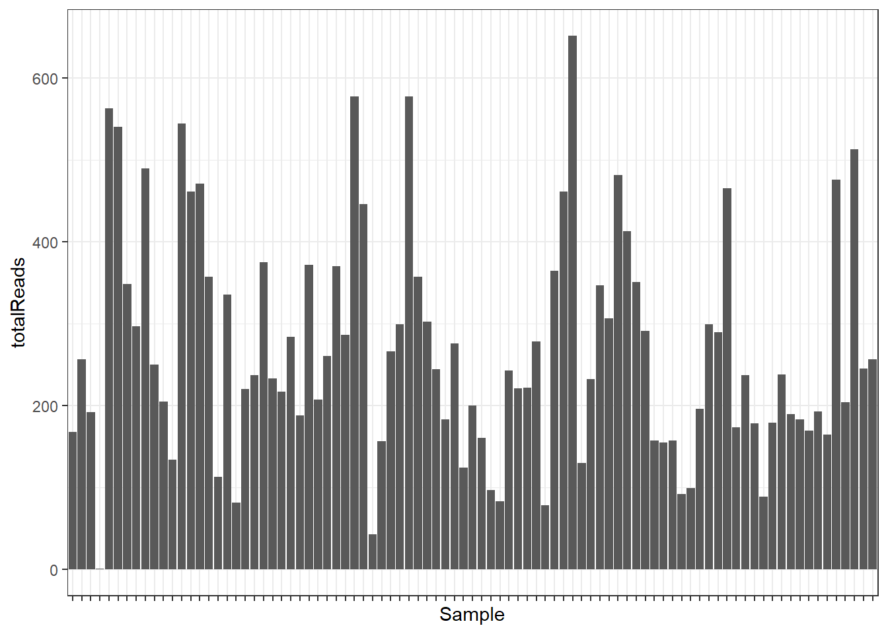
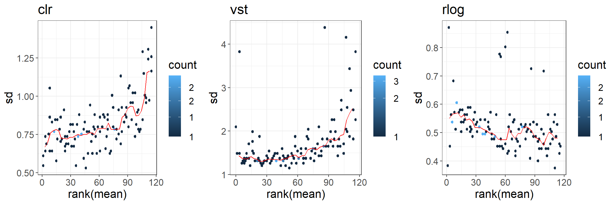

library(phyloseq)
library(DESeq2)
library(vsn)
library(microbiome)
library(dplyr)
library(ggplot2)
library(gridExtra)
soil <- readRDS("data/soil_processed/soil.RDS")Exploratory analysis of compositional data (part II)
Exploratory analysis of a microbial data set
Here we use the “88 soils” data set (Lauber et al. 2009) containing bacterial communities in 88 soils from across North and South America.
Load packages and data data
Exploration of the phyloseq object
soilphyloseq-class experiment-level object
otu_table() OTU Table: [ 116 taxa and 89 samples ]
sample_data() Sample Data: [ 89 samples by 1 sample variables ]
tax_table() Taxonomy Table: [ 116 taxa by 7 taxonomic ranks ]# Read count table
otutab <- otu_table(soil)
otutab[1:10, 1:6]OTU Table: [6 taxa and 10 samples]
taxa are columns
1124701 697997 203969 205391 843189 3431064
103.CA2 15 2 0 0 0 3
103.CO3 14 4 0 0 0 1
103.SR3 1 0 0 0 0 1
103.IE2 8 0 0 1 0 0
103.BP1 13 67 0 0 0 3
103.VC2 7 0 0 1 0 7
103.SA2 6 1 0 0 0 0
103.GB2 3 3 0 0 0 0
103.CO2 2 0 0 1 0 5
103.KP1 2 1 0 0 0 1# Taxonomy table
taxtab <- tax_table(soil)
head(taxtab)Taxonomy Table: [6 taxa by 7 taxonomic ranks]:
Kingdom Phylum Class
1124701 "k__Bacteria" "p__Bacteroidetes" "c__[Saprospirae]"
697997 "k__Bacteria" "p__Acidobacteria" "c__[Chloracidobacteria]"
203969 "k__Bacteria" "p__Acidobacteria" "c__DA052"
205391 "k__Bacteria" "p__Acidobacteria" "c__Solibacteres"
843189 "k__Bacteria" "p__Acidobacteria" "c__Solibacteres"
3431064 "k__Bacteria" "p__Gemmatimonadetes" "c__Gemmatimonadetes"
Order Family Genus
1124701 "o__[Saprospirales]" "f__Chitinophagaceae" "g__"
697997 "o__RB41" "f__" "g__"
203969 "o__Ellin6513" "f__" "g__"
205391 "o__Solibacterales" "f__" "g__"
843189 "o__Solibacterales" "f__Solibacteraceae" "g__Candidatus Solibacter"
3431064 "o__N1423WL" "f__" "g__"
Species
1124701 "s__"
697997 "s__"
203969 "s__"
205391 "s__"
843189 "s__"
3431064 "s__" # Sample data
sampdata <- sample_data(soil)
head(sampdata) ph
103.CA2 8.02
103.CO3 6.02
103.SR3 6.95
103.IE2 5.52
103.BP1 7.53
103.VC2 5.99Add sample variables
We add a few sample variables we will need later in this tutorial:
- sampleID
- phType (acidic if pH<6.7 and basic if pH>6.7)
- totalReads (total number of reads per sample)
sampdata <- data.frame(sampleID = rownames(sampdata),
totalReads = sample_sums(soil),
ph = sampdata$ph)
sampdata$phType <- as.factor(ifelse(sampdata$ph < 6.7, "acid", "basic"))
head(sampdata) sampleID totalReads ph phType
103.CA2 103.CA2 205 8.02 basic
103.CO3 103.CO3 233 6.02 acid
103.SR3 103.SR3 169 6.95 basic
103.IE2 103.IE2 244 5.52 acid
103.BP1 103.BP1 297 7.53 basic
103.VC2 103.VC2 256 5.99 acidtable(sampdata$phType)
acid basic
59 30 # Add data frame to phyloseq object
sample_data(soil) <- sampdataSequencing depth / library size
Plot the sequencing depth (total number of reads) of each sample.
p <- ggplot(sampdata, aes(x = sampleID, y = totalReads)) +
theme_bw() +
geom_bar(stat = "identity") +
theme(axis.text.x = element_blank()) +
xlab("Sample")
p
min(sampdata$totalReads)[1] 1torm <- sampdata[which.min(sampdata$totalReads), "sampleID"]Remove the sample with only one read count.
soil <- subset_samples(soil, sampleID != torm)
soilphyloseq-class experiment-level object
otu_table() OTU Table: [ 116 taxa and 88 samples ]
sample_data() Sample Data: [ 88 samples by 4 sample variables ]
tax_table() Taxonomy Table: [ 116 taxa by 7 taxonomic ranks ]otutab <- as(otu_table(soil), "matrix")
sampdata <- sample_data(soil)Sparsity
Number of zeros and percentage of zeros in the OTU table
nvar <-dim(otutab)[2]
nsamp <- dim(otutab)[1]
sum(otutab == 0)[1] 6797sum(otutab == 0) / (nvar * nsamp) * 100[1] 66.5850367 of the data are zeros.
Visualize microbial composition
Have a look at the microbial compositions on phylum level.
# Agglomerate to phylum level
soil_phyla <- tax_glom(soil, taxrank = "Phylum")Stacked bar plot of the observed “absolute” abundances:
p <- plot_bar(soil_phyla, fill = "Phylum")
p + theme_bw() +
ylab("Absolute abundance") +
theme(axis.text.x = element_blank()) +
scale_fill_brewer(palette = "Set2")
Stacked bar plot of the relative abundances:
# Compute relative abundances
soil_phyla_rel <- transform_sample_counts(soil_phyla, function(x) x/sum(x))p <- plot_bar(soil_phyla_rel, fill = "Phylum")
p + theme_bw() +
ylab("Absolute abundance") +
theme(axis.text.x = element_blank()) +
scale_fill_brewer(palette = "Set2")
Zero replacement
Zero counts are replaced by a unit pseudo count. In doing so, ratios between non-zero counts are preserved, which is not the case if a pseudo count is added to the whole matrix (which is also common).
soil_zrepl <- soil
otu_table(soil_zrepl)[otu_table(soil_zrepl) == 0] <- 1
otutab_zrepl <- as(otu_table(soil_zrepl), "matrix")The zCompositions R package provides more complex methods for zero replacement.
Mean - variance relationship
vsn::meanSdPlot(t(otutab), plot = FALSE)$gg +
theme_bw() + theme(text = element_text(size = 16))
Normalization
We compare three normalization methods we have already seen in the lectures:
- CLR (centered log-ratio) transformation
- Variance stabilizing transformation (vst)
- Regularized log transformation (similar to vst but more robust when the size factors vary widely).
# clr
soil_clr <- microbiome::transform(soil_zrepl, transform = "clr")
clr_counts <- otu_table(soil_clr)
# vst (function expects samples in columns)
vst_counts <- DESeq2::varianceStabilizingTransformation(t(otutab_zrepl),
fitType = "local")converting counts to integer mode# rlog
rlog_counts <- DESeq2::rlog(t(otutab_zrepl), fitType = "local")rlog() may take a long time with 50 or more samples,
vst() is a much faster transformation
converting counts to integer modeCreate mean-sd plots using the function from vsn package.
pclr <- meanSdPlot(t(clr_counts), plot = FALSE)$gg +
theme_bw() + theme(text = element_text(size = 16)) + ggtitle("clr")
pvst <- meanSdPlot(vst_counts, plot = FALSE)$gg +
theme_bw() + theme(text = element_text(size = 16)) + ggtitle("vst")
prlog <- meanSdPlot(rlog_counts, plot = FALSE)$gg +
theme_bw() + theme(text = element_text(size = 16)) + ggtitle("rlog")
gridExtra::grid.arrange(pclr, pvst, prlog,
ncol = 3, nrow = 1)
Alpha diversity
Another common task is diversity analysis. Alpha diversity summarizes the distribution of species abundances in a given sample.
pAlpha <- plot_richness(soil,
color = "phType",
measures = c("Observed", "Shannon", "InvSimpson", "Chao1"),
title = "Alpha diveristy for 88 soil data")
pAlpha + geom_point(size = 2) + theme_bw() + theme(axis.text.x = element_blank())Low-dimensional representation
In this section, we want to plot the data in the two-dimensional space. We therefore compute distances between all samples and perform multi-dimensional scaling (MDS). Here, we use the non-normalized data (see (McKnight et al. 2019))
Distance functions provided by the phyloseq package:
dist_methods <- unlist(distanceMethodList)
dist_methods UniFrac1 UniFrac2 DPCoA JSD vegdist1 vegdist2
"unifrac" "wunifrac" "dpcoa" "jsd" "manhattan" "euclidean"
vegdist3 vegdist4 vegdist5 vegdist6 vegdist7 vegdist8
"canberra" "bray" "kulczynski" "jaccard" "gower" "altGower"
vegdist9 vegdist10 vegdist11 vegdist12 vegdist13 vegdist14
"morisita" "horn" "mountford" "raup" "binomial" "chao"
vegdist15 betadiver1 betadiver2 betadiver3 betadiver4 betadiver5
"cao" "w" "-1" "c" "wb" "r"
betadiver6 betadiver7 betadiver8 betadiver9 betadiver10 betadiver11
"I" "e" "t" "me" "j" "sor"
betadiver12 betadiver13 betadiver14 betadiver15 betadiver16 betadiver17
"m" "-2" "co" "cc" "g" "-3"
betadiver18 betadiver19 betadiver20 betadiver21 betadiver22 betadiver23
"l" "19" "hk" "rlb" "sim" "gl"
betadiver24 dist1 dist2 dist3 designdist
"z" "maximum" "binary" "minkowski" "ANY" MDS plot with Bray Curtis distance
soil_mds_bray <- ordinate(soil, method = "MDS", distance = "bray")First a plot without coloring metadata.
mds_soil_bray <- plot_ordination(soil, soil_mds_bray,
title = "MDS of 88 soil data")
mds_soil_bray +
theme_bw() +
theme(text = element_text(size = 14)) +
geom_point(size = 3)One could identify two main clusters, separated by the first axis.
Add the new data frame to the phyloseq object.
sample_data(soil) <- sampdatamds_soil_bray <- plot_ordination(soil, soil_mds_bray, color = "phType",
title = "")
mds_soil_bray +
theme_bw() +
theme(text = element_text(size = 14)) +
geom_point(size = 3) +
ggtitle("MDS of 88 soil data colored by pH type")
Indeed, pH type separates samples along Axis.1.
MDS plot with Aitchison distance
We generate another MDS plot, but this time using the Aitchison distance, which is simply the Euclidean distance of clr-transformed counts.
soil_mds_ait <- ordinate(soil_clr, method = "MDS", distance = "euclidean")sample_data(soil_clr) <- sampdata
mds_soil_ait <- plot_ordination(soil_clr, soil_mds_ait, color = "phType",
title = "")
p1 <- mds_soil_bray +
theme_bw() +
theme(text = element_text(size = 12)) +
geom_point(size = 3) +
ggtitle("Bray Curtis dissimilarity")
p2 <- mds_soil_ait +
theme_bw() +
theme(text = element_text(size = 12)) +
geom_point(size = 3) +
ggtitle("Aitchison distance")
gridExtra::grid.arrange(p1, p2,
ncol = 2, nrow = 1)
MDS plots for several distance measures
Now, we apply all available distance functions to the data, compute the corresponding MDS embeddings, and plot them.
# Remove some unwanted distances
sel_dist <- dist_methods[!dist_methods %in% c("unifrac", "wunifrac",
"dpcoa", "ANY", "z")]Now we can apply these distance metrics to our data.
gather_ordination_data <- function(d_method, phylo_obj){
# Calculate the MDS matrix using the distance
ordinate_obj <- ordinate(phylo_obj, method = "MDS", distance = d_method)
# Get the data for plotting
plot_data <- plot_ordination(phylo_obj, ordinate_obj)$data
# Add a column for distance
plot_data$distance <- d_method
return(plot_data)
}
mds_plot_data <- bind_rows(lapply(sel_dist, gather_ordination_data,
phylo_obj = soil))
head(mds_plot_data) Axis.1 Axis.2 sampleID totalReads ph phType distance
103.CA2...1 -0.33649635 0.02831767 103.CA2 205 8.02 basic jsd
103.CO3...2 -0.20666028 0.14139595 103.CO3 233 6.02 acid jsd
103.SR3...3 -0.28623896 -0.06653403 103.SR3 169 6.95 basic jsd
103.IE2...4 0.07986531 0.15001745 103.IE2 244 5.52 acid jsd
103.BP1...5 -0.23627593 0.15166403 103.BP1 297 7.53 basic jsd
103.VC2...6 -0.05674931 0.23499852 103.VC2 256 5.99 acid jsdWe color again according to pH type.
mds_soil <- ggplot(mds_plot_data, aes(x=Axis.1, y=Axis.2, color=phType)) +
geom_point() +
facet_wrap(~ distance, scales = "free") +
labs(x="Axis.1",
y="Axis.2",
title="Separation of 88 soil samples according to different distances")
mds_soil + theme_bw() + theme(text = element_text(size = 12))References
Lauber, Christian L, Micah Hamady, Rob Knight, and Noah Fierer. 2009. “Pyrosequencing-Based Assessment of Soil pH as a Predictor of Soil Bacterial Community Structure at the Continental Scale.” Applied and Environmental Microbiology 75 (15): 5111–20.
McKnight, Donald T., Roger Huerlimann, Deborah S. Bower, Lin Schwarzkopf, Ross A. Alford, and Kyall R. Zenger. 2019. “Methods for Normalizing Microbiome Data: An Ecological Perspective.” Methods in Ecology and Evolution 10 (March): 389–400. https://doi.org/10.1111/2041-210X.13115.